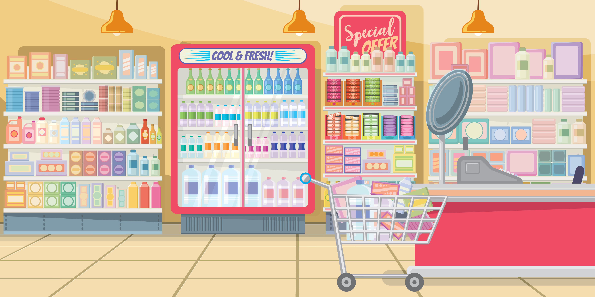
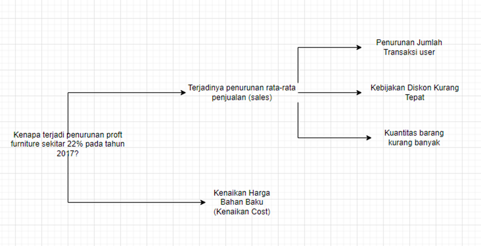
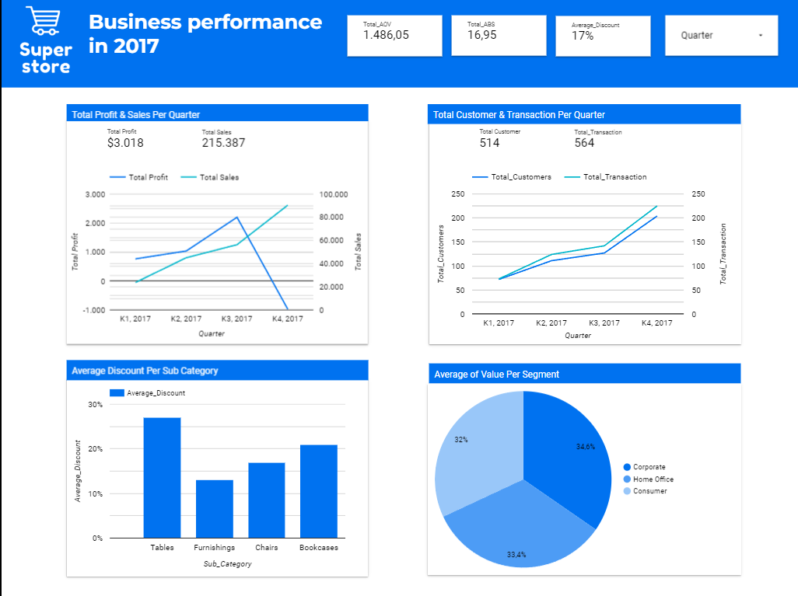

SUPERSTORE ANALYSIS
BACKGROUND

Perusahaan Superstore mempunyai profit penjualan furniture yang tidak konsisten. Yang dimana pada tahun 2017 terjadi penurunan profit. Maka dari itu perusahaan superstore ingin mencari faktor-faktor yang menyebabkan terjadinya penurunan profit furniture.
Perusahaan Superstore berharap jika faktor-faktor penurunan profit berhasil ditemukan, maka profit pada tahun-tahun berikutnya akan meningkat.
OBJECTIVE
Mencari tahu faktor-faktor yang menyebabkan penurunan rata-rata profit furniture di tahun 2017 dan memberikan rekomendasi untuk meningkatkan profit di tahun-tahun berikutnya.
ROOT CAUSE & HYPOTHESIS
- Jika kuantitas furniture yang dijual meningkat, maka profit penjualan furniture yang didapatkan akan meningkat
- Jika terjadi peningkatan jumlah transaksi, maka profit penjualan furniture akan meningkat
- Jika kebijakan diskon yang diterapkan dapat lebih bijak, maka profit penjualan furniture akan meningkat
ANALYSIS RESULT
A. BUSINESS QUESTION
- Secara garis besar apa yang membuat terjadinya penurunan total profit penjualan furniture pada tahun 2017?
- Apakah terjadinya penurunan total profit penjualan furniture pada tahun 2017 berhubungan dengan apa yang terjadi pada penjualan per sub segmen? Jika ada hubungannya, faktor apa yang membuat terjadinya penurunan total profit penjualan furniture pada tahun 2017?
- Apakah terjadinya penurunan total profit penjualan furniture pada tahun 2017 berhubungan dengan apa yang terjadi pada penjualan per sub-kategori? Jika ada hubungannya, faktor apa yang membuat terjadinya penurunan total profit penjualan furniture pada tahun 2017?
- Apakah terjadinya penurunan total profit penjualan furniture pada tahun 2017 berhubungan dengan apa yang terjadi pada penjualan per region? Jika ada hubungannya, faktor apa yang membuat terjadinya penurunan total profit penjualan furniture pada tahun 2017?
- Apakah terjadinya penurunan total profit penjualan furniture pada tahun 2017 berhubungan dengan apa yang terjadi pada penjualan per ship mode? Jika ada hubungannya, faktor apa yang membuat terjadinya penurunan total profit penjualan furniture pada tahun 2017?
B. ANSWERS
-
Secara garis besar apa yang membuat terjadinya penurunan total profit penjualan furniture pada tahun 2017?
Answer : Sebenarnya penyebabnya masih kurang dapat terlihat, akan tetapi secara garis besar hal yang membuat terjadinya penurunan total profit pada penjualan furniture untuk tahun 2017 adalah karena terjadinya penurunan Average Order Value (AOV) pada tahun 2017. Semuanya akan lebih jelas nanti jika kita membagi dengan lebih rinci.
-
Apakah terjadinya penurunan total profit penjualan furniture pada tahun 2017 berhubungan dengan apa yang terjadi pada penjualan per sub segmen? Jika ada hubungannya, faktor apa yang membuat terjadinya penurunan total profit penjualan furniture pada tahun 2017?
Answer : Hubungannya ada pada data AOV, yang dimana faktor yang membuat terjadinya penurunan total profit penjualan furniture pada tahun 2017 adalah karena perusahaan superstore ini terlalu fokus untuk menaikkan total profit dan AOV milik home office pada tahun 2017. Sehingga menyebabkan total profit dan AOV pada segmen lainnya turun.
-
Apakah terjadinya penurunan total profit penjualan furniture pada tahun 2017 berhubungan dengan apa yang terjadi pada penjualan per sub-kategori? Jika ada hubungannya, faktor apa yang membuat terjadinya penurunan total profit penjualan furniture pada tahun 2017?
Answer : Hubungannya ada pada data AOV serta Kebijakan diskon yang masih kurang tepat, yang dimana terjadinya penurunan AOV pada hampir semua sub-kategori membuat terjadinya penurunan total profit penjualan furniture pada tahun 2017. Hal itu didorong dengan terjadinya penurunan total profit dan AOV tables yang mengalami penurunan terbesar, sub-kategori tables ini juga merupakan sub-kategori yang memiliki total profit paling rendah setiap tahunnya dibandingkan dengan sub kategori lainnya. Semua itu dikarenakan rata-rata diskon untuk sub kategori tables yang lebih besar dibandingkan sub-kategori lainnya.
-
Apakah terjadinya penurunan total profit penjualan furniture pada tahun 2017 berhubungan dengan apa yang terjadi pada penjualan per region? Jika ada hubungannya, faktor apa yang membuat terjadinya penurunan total profit penjualan furniture pada tahun 2017?
Answer : Hubungannya ada pada data AOV dan persentase jumlah transaksi yang menggunakan diskon, yang dimana apabila pada tahun tersebut persentase transaksi diskon meningkat dengan diikuti oleh penurunan nilai AOV dari tahun kemarin. Maka akan terjadi penurunan total profit pada tahun tersebut, sedangkan jika persen transaksi diskon menurun dengan diikuti oleh penurunan AOV. Maka total profit masih berkesempatan untuk naik, begitu juga apabila persen transaksi diskon meningkat akan tetapi nilai AOVnya juga meningkat, maka masih ada kesempatan untuk Total profit meningkat pada tahun tersebut. Region south adalah yang paling berpengaruh, hal itu dikarenakan terjadinya perubahan pasar tiba-tiba pada persentase transaksi yang menggunakan diskon yang dimana tiba-tiba persentase tersebut naik secara drastis pada tahun 2017.
-
Apakah terjadinya penurunan total profit penjualan furniture pada tahun 2017 berhubungan dengan apa yang terjadi pada penjualan per ship mode? Jika ada hubungannya, faktor apa yang membuat terjadinya penurunan total profit penjualan furniture pada tahun 2017?
Answer : Hubungannya lagi-lagi ada pada data AOV dan ABS bahkan sampai ke total quantity yang terjual, yang dimana terjadinya penurunan AOV pada beberapa ship mode yang mengalami penurunan total profit yang besar. Hal itu lebih didorong dengan terjadinya penurunan ABS bahkan untuk ship mode yang mengalami penurunan total profit paling banyak yaitu standard class sampai-sampai mengalami penurunan total quantity yang terjual pada tahun tersebut. Padahal pada tahun-tahun sebelumnya standard class merupakan ship mode yang paling banyak memberikan profit, akan tetapi pada tahun 2017 standard class menjadi yang terendah.
C. RECOMENDATION
- Perusahaan superstore harus mencoba untuk menaikkan AOV dari penjualan furniture dengan harapan dapat meningkatkan total profit penjualan furniture pada tahun selanjutnya.
- Perusahaan superstore dapat lebih menaikkan AOV dari segmen consumer dan corporate, hal itu dikarenakan pada tahun 2016 segmen-segmen tersebut yang mendominasi pasar. Perusahaan superstore juga dapat menaikkan AOV dari segmen home office dengan catatan tidak boleh terjadi penurunan AOV pada segmen lainnya. Dengan harapan total profit akan meningkat pada tahun berikutnya.
- Perusahaan superstore dapat meningkatkan AOV dari setiap sub-kategori dan perusahaan superstore dapat mencoba untuk mengganti kebijakan diskon milik sub-kategori tables dengan harapan membuat total profit milik tables menjadi positif pada tahun selanjutnya.
- Perusahaan superstore dapat mencoba untuk menaikkan AOV serta sedikit mengurangi acara/promosi diskon pada region yang persentase transaksi menggunakan diskonnya naik, sehingga total profit yang kita dapatkan untuk tahun selanjutnya meningkat.
- Perusahaan superstore harus menaikkan AOV dan mencegah terjadinya penurunan ABS serta mencegah terjadinya penurunan total quantity yang terjual untuk tiap ship mode pada tahun berikutnya.
DASHBOARD
Team 16 - Jayapura Member
Nama1